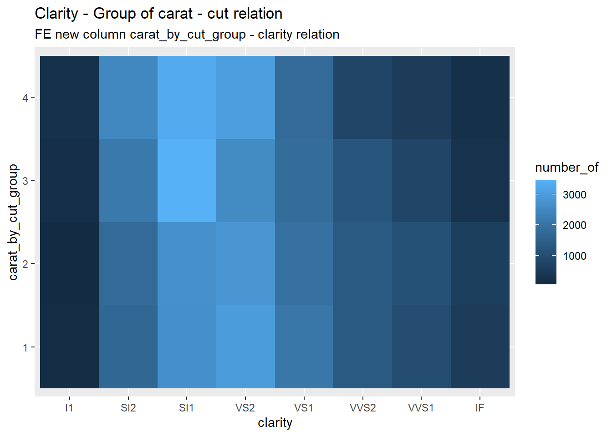
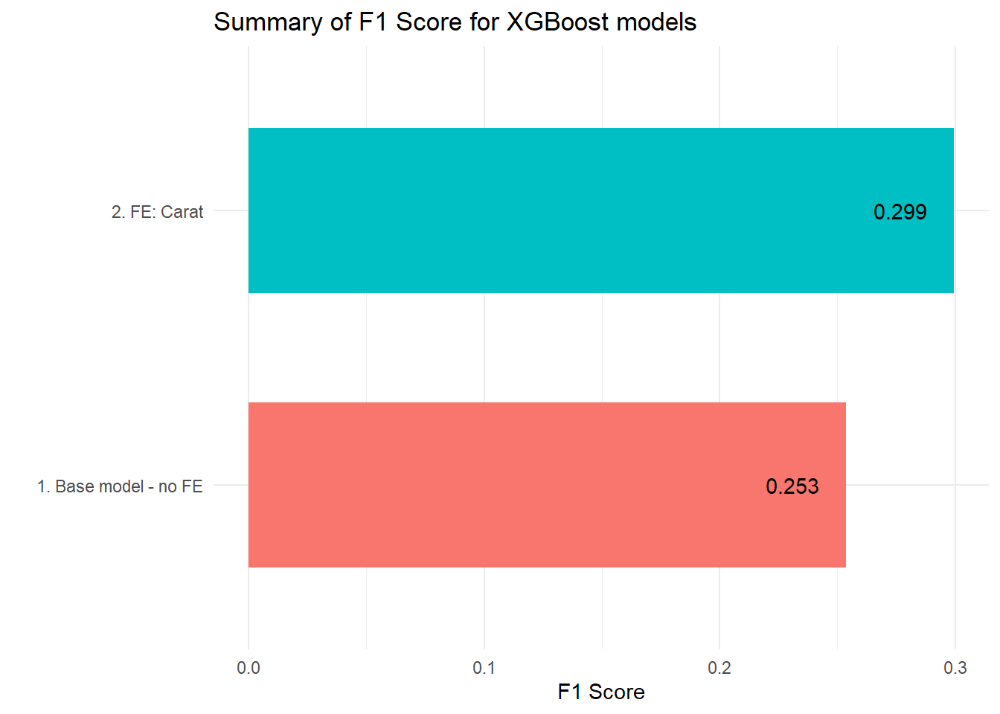
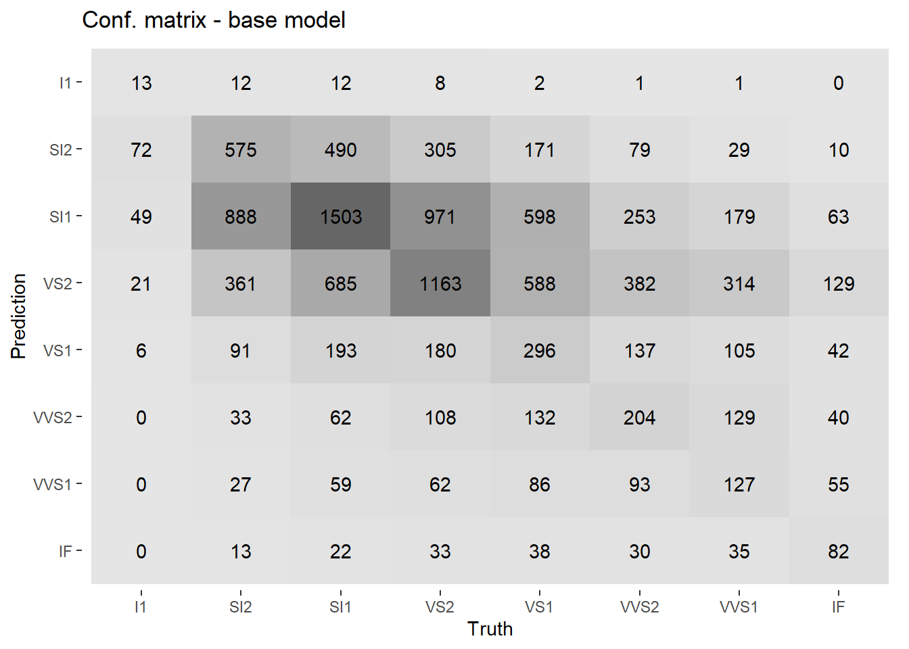
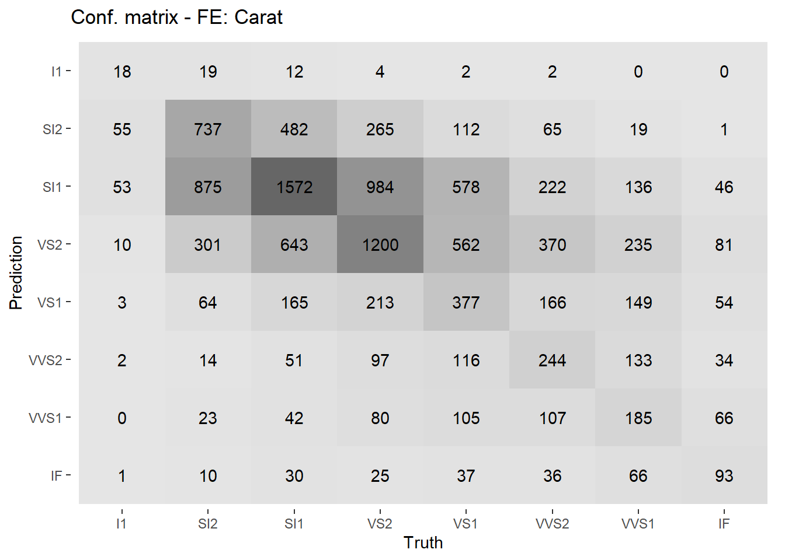

library(ggplot2)
library(tidymodels)
library(dbscan)
library(dplyr)
library(viridis)
library(rcompanion)
library(effectsize)
library(knitr)
library(gt)
library(broom)
library(rstatix)
library(yardstick)Feature engineering for the XGBoost model using Cramér’s V and Eta Square tests
Introduction
The problem addressed in this paper is feature engineering. Using the Diamonds dataset as an example, a model will be built to predict the clarity feature based on the remaining columns. In one case, the columns will have their original character—no new columns will be added. In the other case, a new column will be added, relating to the relationship between the diamond cut and weight.
To correctly identify the features that, after transformation, can lead to the clarity value, a series of statistical tests will be performed to determine which columns influence the value in the clarity column. Depending on the column type—categorical or numerical—different types of tests will be used.
1. Loading libraries and data
set.seed(123)data("diamonds")2. Function for training and evaluating the model
To train and evaluate the model, it’s necessary to create a function because the code will be used more than once. The resulting function would be quite large, so it would be broken down into several smaller ones.
Data preprocessing
In the first step of preprocessing, the data is divided into training and test data.
Next, columns correlated with other existing ones are removed, the data is normalized (to prevent highly numerical data but low-level data from suppressing the information), and categorical data is converted to numerical data.
data_preprocessing <- function(df) {
df <- df %>% select(-price)
data_split <- initial_split(df, prop = 0.75, strata = clarity)
training_data <- training(data_split)
testing_data <- testing(data_split)
xgb_recipe <- recipe(clarity ~ ., data = training_data) %>%
step_corr(all_numeric_predictors()) %>%
step_normalize(all_numeric_predictors()) %>%
step_dummy(all_nominal_predictors(), one_hot = TRUE)
list(training_data = training_data, testing_data = testing_data, xgb_recipe = xgb_recipe)
}Model fit and predict
In the next step, an instance of the model is created, trained, and makes predictions on the test data.
prediction_results <- function (preprocessing_results) {
xgb_spec <- boost_tree(trees = 100, tree_depth = 9, learn_rate = 0.1) %>%
set_engine("xgboost") %>%
set_mode("classification")
xgb_wf <- workflow() %>%
add_recipe(preprocessing_results$xgb_recipe) %>%
add_model(xgb_spec)
xgb_fit <- fit(xgb_wf, data = preprocessing_results$training_data)
results <- predict(xgb_fit, preprocessing_results$testing_data, type = "class") %>%
bind_cols(predict(xgb_fit, preprocessing_results$testing_data, type = "prob")) %>%
bind_cols(truth = preprocessing_results$testing_data$clarity)
}Final function
Previously created functions are combined into one.
train_and_evaluate_xgb <- function(df) {
preprocessing_results <- data_preprocessing(df)
results <- prediction_results(preprocessing_results)
results_list <- list(
f1_score = f_meas(results, truth = truth, estimate = .pred_class),
confusion_matrix = conf_mat(results, truth = truth, estimate = .pred_class)
)
return(results_list)
}3. Clarity dependencies on other columns
To extract features that determine clarity, a series of statistical tests should be performed on other columns. This will identify which columns most influence clarity, and by highlighting their features, it will be easier for the model to predict clarity.
Clarity - Color
tbl_clarity_color <- table(diamonds$color, diamonds$clarity)
chisq.test(tbl_clarity_color) |>
tidy() |>
gt() |>
tab_header(title = "Test Chi-kwadrat") |>
tab_options(table.align = "left")| Test Chi-kwadrat | |||
|---|---|---|---|
| statistic | p.value | parameter | method |
| 2047.079 | 0 | 42 | Pearson's Chi-squared test |
tibble("Cramér's V" = cramerV(tbl_clarity_color)) |>
gt() |>
tab_header(title = "Cramér's V") |>
tab_options(table.align = "left")| Cramér's V |
|---|
| Cramér's V |
| 0.07953 |
Clarity - Cut
tbl_cut_clarity <- table(diamonds$cut, diamonds$clarity)
chisq.test(tbl_cut_clarity) |>
tidy() |>
gt() |>
tab_header(title = "Test Chi-kwadrat") |>
tab_options(table.align = "left")| Test Chi-kwadrat | |||
|---|---|---|---|
| statistic | p.value | parameter | method |
| 4391.398 | 0 | 28 | Pearson's Chi-squared test |
tibble("Cramér's V" = cramerV(tbl_cut_clarity)) |>
gt() |>
tab_header(title = "Cramér's V") |>
tab_options(table.align = "left")| Cramér's V |
|---|
| Cramér's V |
| 0.1427 |
Clarity - numeric columns
numeric_vars <- c("carat", "depth", "table", "price")
indep_var <- "clarity"
results <- lapply(numeric_vars, function(var) {
f <- as.formula(paste(var, "~", indep_var))
model <- aov(f, data = diamonds)
# Extract ANOVA p-value
pval <- broom::tidy(stats::anova(model))$p.value[1]
# Extract eta²
eta <- effectsize::eta_squared(model, partial = FALSE)$Eta2[1]
tibble(variable = var, p_value = pval, eta_squared = eta)
}) |> bind_rows()
results |>
gt() |>
tab_header(title = "ANOVA results: Clarity vs numeric variables") |>
fmt_number(columns = c(p_value, eta_squared), decimals = 4) |>
tab_options(table.align = "left")| ANOVA results: Clarity vs numeric variables | ||
|---|---|---|
| variable | p_value | eta_squared |
| carat | 0.0000 | 0.1372 |
| depth | 0.0000 | 0.0101 |
| table | 0.0000 | 0.0262 |
| price | 0.0000 | 0.0272 |
As a result of the above, it was concluded that clarity is most dependent on carat and cut. Therefore, a new characteristic based on these two characteristics should be created.
4. Removing outliers - DBSCAN
Before creating a new feature, the dataset must be cleared of outliers. The DBSCAN method will be used.
First, numeric columns are separated from categorical ones.
diamonds_n <- diamonds %>%
select(where(is.numeric))diamonds_non_numeric <- diamonds %>%
select(where(~ !is.numeric(.)))The next step is to divide the data into clusters.
diamonds_dbscan <- dbscan(select(diamonds, where(is.numeric)), eps = 4, minPts = 6)
diamonds_clustered <- diamonds_n %>%
mutate(cluster = diamonds_dbscan$cluster)The numerical data with the added cluster number are then combined with the categorical data.
diamonds_clustered <- bind_cols(diamonds_clustered, diamonds_non_numeric)Next, the rows where the cluster value is not zero are filtered. Rows with a cluster value of zero are considered outliers.
diamonds_no_outlier <- diamonds_clustered %>%
filter(cluster != 0) %>%
select(-cluster)5. Feature engineering for the clarity column
The next step is to create a new feature.
First, we group by a clarity-dependent categorical column—cut.
We then assign an average diamond weight to each row depending on the cut group.
Finally, a target categorical feature is created that groups the previously obtained mean.
diamonds_fe <- diamonds_no_outlier %>%
group_by(cut) %>%
mutate(mean_carat_by_cut = mean(carat)) %>%
ungroup() %>%
mutate(
carat_by_cut_group = factor(ntile(mean_carat_by_cut, 4))
)Now we need to evaluate the new feature - whether it differs for different clarity levels.
diamonds_fe_for_display <- diamonds_fe %>%
group_by(clarity,carat_by_cut_group) %>%
summarise(number_of = n())Once grouped and counted, you can draw a tile chart showing how many diamonds of a given clarity grade there are in the newly created column.
ggplot(diamonds_fe_for_display, aes(x = clarity, y = carat_by_cut_group, fill = number_of))+
geom_tile()+
labs(
title = "Clarity - Group of carat - cut relation",
subtitle = "FE new column carat_by_cut_group - clarity relation"
)
It’s clear that diamonds in some clarity categories have different values for each new column value, which can help with predictions. However, these differences aren’t significant, which isn’t surprising, as the correlation test results didn’t yield significant values.
6. Comparison of the base model and the feature engineering model
First, the model will be tested with basic data - without feature engineering.
results_baseline <- train_and_evaluate_xgb(diamonds_no_outlier)A dataset is prepared with a new categorical column created by feature engineering.
df_fe_carat_cut <- diamonds_fe %>%
select(names(diamonds), carat_by_cut_group) The model is then trained and evaluated with the new feature.
results_fe_carat_cut <- train_and_evaluate_xgb(df_fe_carat_cut)A summary frame is then created containing the F1 metric.
summary_df <- tibble(
Model = c(
"1. Base model - no FE",
"2. FE: Carat"
),
F1_Score = c(
results_baseline$f1_score$.estimate,
results_fe_carat_cut$f1_score$.estimate
)
) %>%
arrange(desc(F1_Score))In order to efficiently display a frame with F1 points, the gt package will be used.
summary_df %>%
gt() %>%
tab_header(
title = "Comparassion of models - XGBoost"
) %>%
fmt_number(
columns = F1_Score,
decimals = 3
) %>%
tab_options(table.align = "left")| Comparassion of models - XGBoost | |
|---|---|
| Model | F1_Score |
| 2. FE: Carat | 0.299 |
| 1. Base model - no FE | 0.253 |
To graphically compare models with and without feature engineering based on F1 scores, a column chart will be displayed.
ggplot(summary_df, aes(x = reorder(Model, F1_Score), y = F1_Score, fill = Model)) +
geom_col(show.legend = FALSE, width = 0.6) +
coord_flip() +
geom_text(aes(label = round(F1_Score, 3)), hjust = 1.5)+
labs(title = "Summary of F1 Score for XGBoost models",
x = "", y = "F1 Score") +
theme_minimal()
The next step is to display the confusion matrix for the results from the model without feature engineering
autoplot(results_baseline$confusion_matrix, type = "heatmap") +
labs(title = "Conf. matrix - base model")
And also the confusion matrix for the model in which feature engineering was applied.
autoplot(results_fe_carat_cut$confusion_matrix, type = "heatmap") +
labs(title = "Conf. matrix - FE: Carat")
7. Summary
The results of the C-V and Eta-squared statistical tests clearly indicated that there were relationships between clarity and diamond cut and weight, but these relationships were moderate—around ten percent—a significant increase, ranging from a few to several dozen percent, could not be expected. However, for many models, such an increase is significant.
The resulting increase may have significant practical significance. Although the model is often incorrect, based on the conf. matrix, it can be easily concluded that the obtained diamond clarity grades are often close to the actual grade—the error is often not significant.
The resulting model may have some practical significance. In the case of a batch of goods already in stock, where there is no information about the price of individual diamonds and their purity, their purity can be estimated with a certain degree of probability using the model, which yields significantly better results than random guessing, which can help organize the diamonds stored in stock.